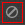

灯光编辑器提供了一种在场景中管理灯光的简便方法。将“灯光编辑器”(Light Editor)与“渲染设定”(Render Setup)编辑器结合使用，可以轻松为渲染层创建灯光覆盖。
单击状态行上的  ，或者双击“渲染设定”(Render Setup)编辑器顶部的“灯光”(Lights)选项卡，可打开“灯光编辑器”(Light Editor)。场景中的所有灯光均会列出。
，或者双击“渲染设定”(Render Setup)编辑器顶部的“灯光”(Lights)选项卡，可打开“灯光编辑器”(Light Editor)。场景中的所有灯光均会列出。
要显示每层（包括场景层）的灯光属性，请将其设置为可见。您还可以从“灯光编辑器”(Light Editor)的下拉列表中选择层。
这使您可以：
-
覆盖渲染层中的特定灯光属性，并设置覆盖值
-
检查当前渲染层中的灯光属性值
-
通过覆盖“启用”(Enable)属性，禁用渲染层中的特定灯光
“灯光编辑器”(Light Editor)始终反映您所在渲染层的值。例如，如果您在场景层中，则“特性编辑器”(Property Editor)会显示每个灯光的场景值。当您处于渲染层中时，“特性编辑器”(Property Editor)会显示在当前层中为每个灯光设置的值。
默认情况下，灯光会自动添加到每个渲染层中。要覆盖此行为，请在“渲染设定”(Render Setup)编辑器中禁用“选项 > 每个渲染层默认包含所有灯光”(Options > Include all lights in each render layer by default)。然后，您可以将特定灯光添加到每个层的“灯光”(Lights)集合中。请参见将灯光添加到渲染层。
在层中为各个灯光创建覆盖
- 形状节点上的属性（例如，“颜色”(Color)和“强度”(Intensity)）
- 变换节点上的属性（“平移”(Translate)、“旋转”(Rotate)、“缩放”(Scale)）
- “启用”(Enable)和“隔离”(Isolate)属性
- 通过将灯光集合从“场景”(Scene)设置拖放到层中来创建灯光集合。
- 单击
 图标，切换到要创建灯光覆盖的层。
图标，切换到要创建灯光覆盖的层。
- 在“灯光编辑器”(Light Editor)中，选择要创建覆盖的灯光。
- 在灯光编辑器的“特性编辑器”(Property Editor)中，在属性上单击鼠标右键，然后选择“为可见层创建绝对覆盖”(Create Absolute Override for Visible Layer)或“为可见层创建相对覆盖”(Create Relative Override for Visible Layer)以创建绝对覆盖或相对覆盖。
注： 不得在渲染层中选择任何集合；否则，将为该集合（而非选定灯光）创建覆盖。
覆盖值用橙色表示。只要创建了覆盖，系统便会在“渲染设定”(Render Setup)编辑器中为层创建“灯光”(Lights)集合（如果尚不存在）。系统将在此“灯光”(Lights)集合内创建一个集合，其中包含刚才已修改的灯光以及相应的覆盖。
- 在灯光编辑器或“渲染设置”(Render Setup)的“特性编辑器”(Property Editor)中，调整覆盖的值。
不能将渲染层中的“灯光”(Lights)集合拖放到同一层内的其他集合中。
只能将“灯光”(Lights)集合从一个渲染层剪切、复制并粘贴到另一个渲染层中。无法剪切、复制和粘贴各个灯光覆盖或各个灯光子集合。
灯光编辑器中的属性颜色
覆盖属性显示为橙色，动画属性显示为红色。
未应用任何覆盖的属性显示为白色。锁定属性也显示为白色，但无法编辑。
使用覆盖禁用层中的灯光
要禁用层中的灯光，请覆盖其“启用”(Enable)属性。
- 在“灯光编辑器”(Light Editor)中，通过下拉列表切换到层。
- 选择要禁用的灯光。在“特性编辑器”(Property Editor)中，右键单击“启用”属性，然后选择“为可见层创建绝对覆盖”(Create Absolute Override for Visible Layer)。
图标显示为带橙色边框以指示它已应用覆盖，并且“启用”属性将以橙色显示。
- 关闭“启用”(Enable)属性。
“灯光编辑器”(Light Editor)和“属性编辑器”(Attribute Editor)之间的关系
打开“灯光编辑器”(Light Editor)会在该编辑器与场景中灯光形状节点上的“可见性”(Visibility)属性之间创建连接。通过此连接，您可以使用“灯光编辑器”(Light Editor)的“启用”(Enable)和“隔离”(Isolate)属性控制灯光的可见性；但是，“属性编辑器”(Attribute Editor)中的“可见性”(Visibility)开关也变得不可用。
然而，如果您右键单击“可见性”(Visibility)属性并选择“断开连接”(Break Connection)，则在“灯光编辑器”(Light Editor)中，相应灯光的  图标显示为带红色边框，以指示您无法再使用此图标来控制灯光。
要覆盖“可见性”(Visibility)属性，请执行下列操作之一：
- 关闭并重新打开“灯光编辑器”(Light Editor)。重新打开时， 图标周围的红色边框将消失，并且您可以在“启用”(Enable)属性上创建覆盖。
- 在“属性编辑器”(Attribute Editor)中，右键单击“可见性”(Visibility)属性并选择“为可见层创建绝对覆盖”(Create Absolute Override for Visible Layer)。即使您关闭并重新打开“灯光编辑器”(Light Editor)，此覆盖仍然有效，但 图标周围的红色边框仍然存在。